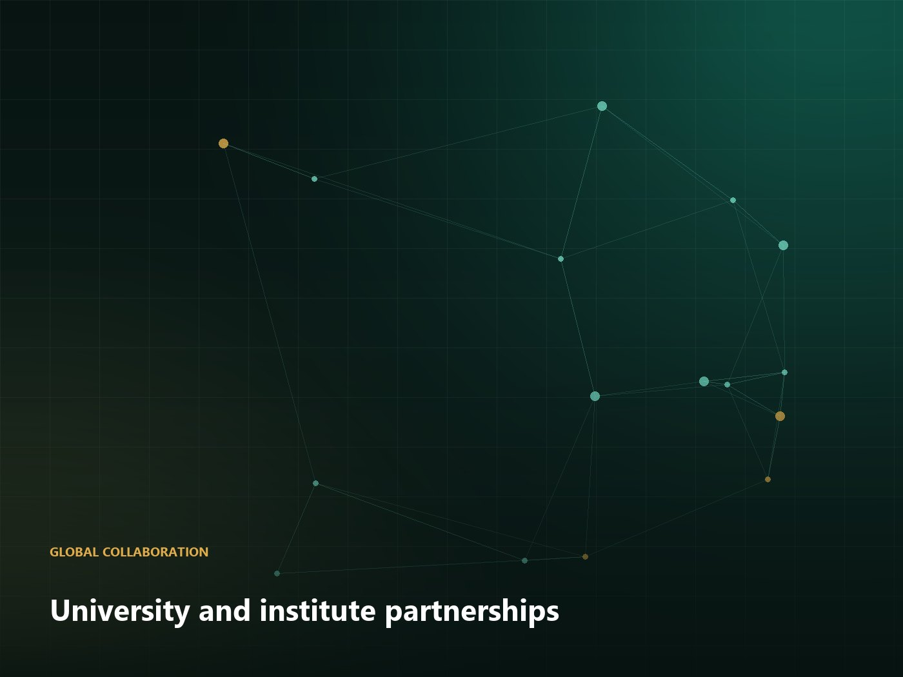
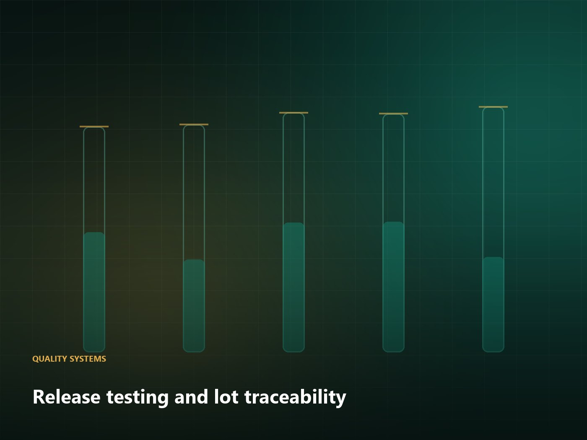
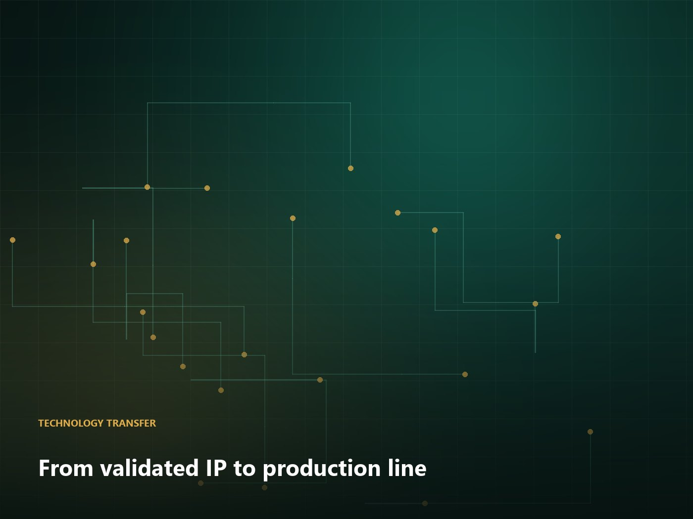

Technology
Technology development, transfer and international collaboration
We take a process that works in a laboratory and make it work reliably in a production facility — with the documentation that lets a regulator, an auditor or a customer verify it.
Services
What we deliver
Engagements are scoped as fixed deliverables rather than open-ended consulting hours.
Process characterisation
Thermal and mechanical history documented for the pilot process, so scale-up is modelled rather than guessed.
Scale-up engineering
Equipment specification, vessel and control-system design, and a design space with defensible control limits.
Qualification support
IQ/OQ/PQ protocols, factory acceptance testing and third-party analysis arranged on your behalf.
Technology transfer
Documentation packages and on-site support to move a process between facilities, including across borders.
Analytical method transfer
Method verification, marker-compound selection and fingerprinting for batch-to-batch comparability.
Regulatory documentation
Technical files, specifications and stability summaries drafted to the expectations of your target market.
International collaboration
Collaboration models for universities, institutes and manufacturers
Structured programmes with defined intellectual-property terms, milestones and reporting.

Model A
Joint development programme
A defined development question, a shared work plan, and agreed ownership of results from the outset. We bring botanical process capability and analytical capacity; you bring the clinical or market question.
- Written scope with milestone-based deliverables
- IP ownership agreed before work begins
- Joint steering group with quarterly reporting
- Publication rights negotiated in advance

Model B
Contract development & manufacturing transfer
You hold the product and the market; we develop the process, produce qualification batches and transfer the technology to your nominated facility with full documentation.
- Confidentiality and non-compete terms
- Qualification batch manufacture in our facility
- Complete technology transfer dossier
- On-site support at your receiving plant

Model C
Academic and clinical exchange
Researcher and practitioner exchange, joint case conferences and shared teaching material, with practical logistics handled by us — visas, interpretation and documentation included.
- Researcher and practitioner placements
- Bilingual case conferences
- Shared teaching material development
- Visa, interpretation and logistics support
How we work
From first conversation to qualified process
Technical scoping
Two weeks of information gathering: current process, equipment, analytical capability and constraints.
Written proposal
Scope, deliverables, schedule, price and explicit assumptions. Fixed-price wherever the scope allows.
Characterisation
Pilot process documented as a thermal and mechanical history with supporting analytical data.
Design & specification
Production equipment modelled and specified; design space and control limits defined.
Confirmation batches
Instrumented intermediate-scale batches with temperature mapping before capital commitment.
Validation & handover
IQ/OQ/PQ execution, training and a complete documentation package handed to your team.
Have a process that needs to scale?
Send us the current process description and your target output. We will tell you what we think the scale-up risks are, in writing, before any commercial discussion.